temp_anomaly— sea surface temperature anomaly (°C)nitrate— nitrate concentration (μmol/L)status— kelp forest condition: healthy or degraded

EDS 232
Lesson 7
Cross-validation
A guiding example
The same synthetic dataset from the previous lessons — 300 coastal monitoring stations:
temp_anomaly — sea surface temperature anomaly (°C)nitrate — nitrate concentration (μmol/L)status — kelp forest condition: healthy or degradedPrevious lesson: used logistic regression to predict kelp forest status.
Today: how to make that process more rigorous.
Synthetic data generated for educational purposes only
Why cross-validation?
Recall: we classify a site as healthy if \(p(X) \geq \alpha\), degraded otherwise.
The default is \(\alpha = 0.5\), but the best threshold for our data may be different.
. . .
Idea: try many values of \(\alpha\), measure accuracy on the test set, pick the best.
Accuracy at default α = 0.50: 0.711
Best threshold found on test set: α = 0.59
Accuracy at that threshold: 0.722. . .
We found a threshold that beats the default: but is there something wrong with this process?
We used the test set to make a modeling decision: we examined the test set outcomes to figure out which threshold works best, then reported accuracy on those same observations.
We selected \(\alpha\) because it happened to work well on these 90 test observations — not because it generalizes well.
. . .
This is called data leakage: information from the test set leaked into our modeling process. The reported accuracy is no longer an honest estimate of performance on truly new data.
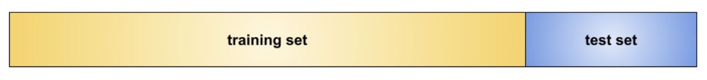
Diagram from Google’s ML Concepts Crash Course.
This works well to report metrics for a single, already-decided model, but breaks down when we need to make any modeling decision.
We would want to:
. . .
Cross-validation is a standard tool for doing this:
The test set is only used once, for the final reported result.
The validation set approach
The simplest resampling method:
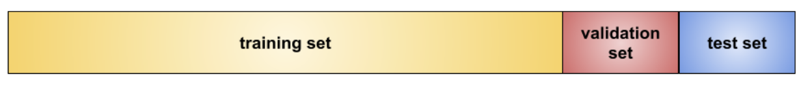
Diagram from Google’s ML Concepts Crash Course.
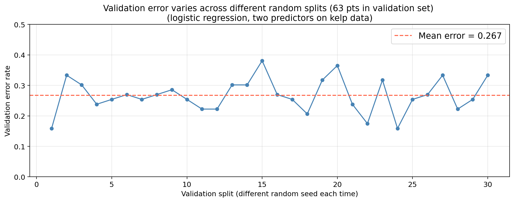
Same model, same data, only the split changes. The error estimate varies substantially across splits.
The training set for the kelp data has 210 points.
If you used a 50/50 split (105 points for training / 105 for validation),
what would be a bigger concern:
the validation error being much higher or much lower than the test error?
. . .
The concern would be that the validation error is higher than the test error the validation error estimates performance of a model trained on only 105 observations, but the final model will be trained on all 210.
More training data almost always produces a better model, so the validation error overestimates the true test error.
Setting aside part of the training data for validation means the model is fit on fewer observations than we will ultimately use.
Models fit on less data tend to perform worse, so the validation error will tend to overestimate the true test error of the final model (which will be trained on all the data). This could lead to us selecting a sub-optimal model.
. . .
K-fold cross-validation addresses both of these drawbacks.
\(k\)-fold cross-validation
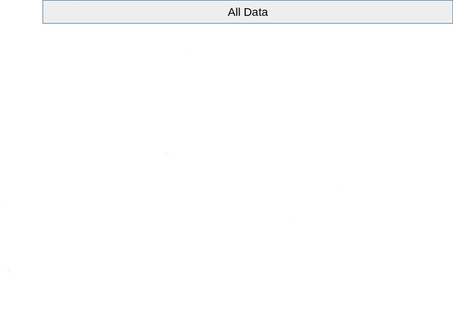
Diagram adapted from scikit-learn’s documentation on cross-validation
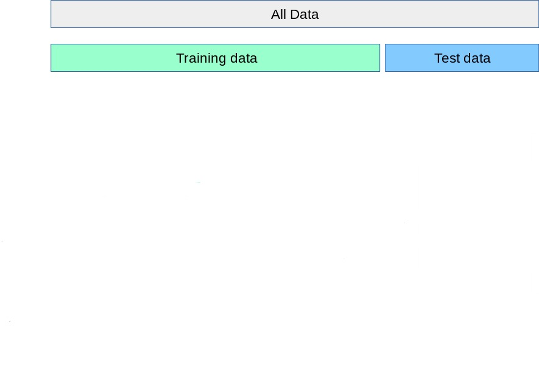
Diagram adapted from scikit-learn’s documentation on cross-validation
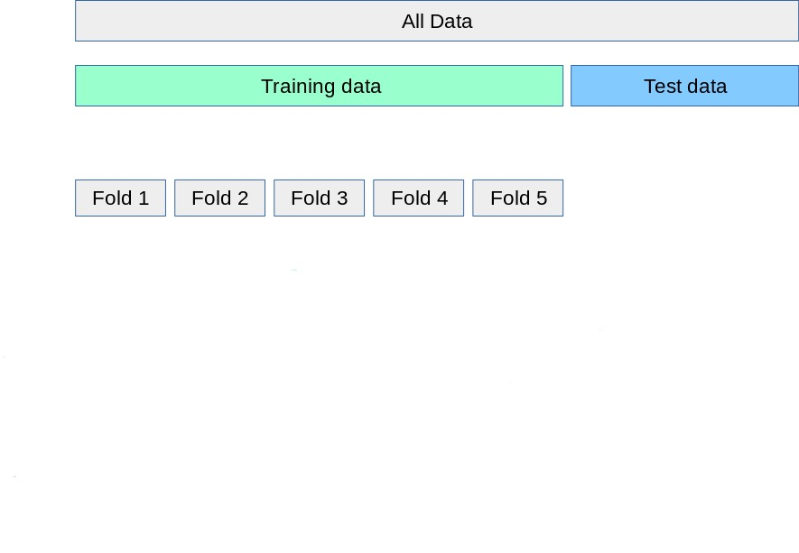
Diagram adapted from scikit-learn’s documentation on cross-validation
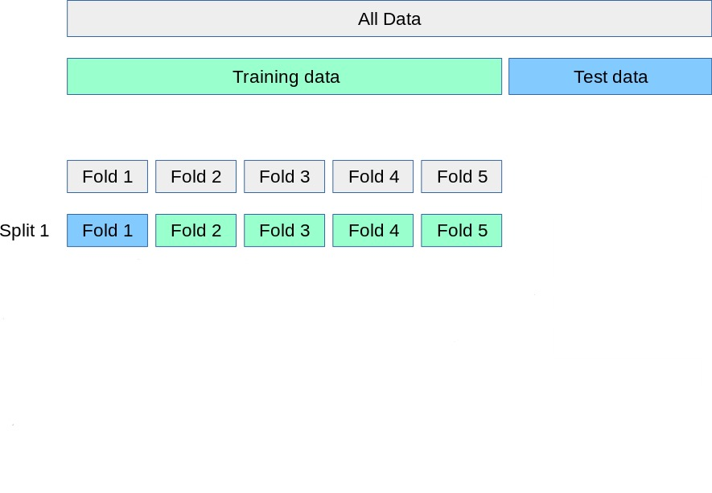
Diagram adapted from scikit-learn’s documentation on cross-validation
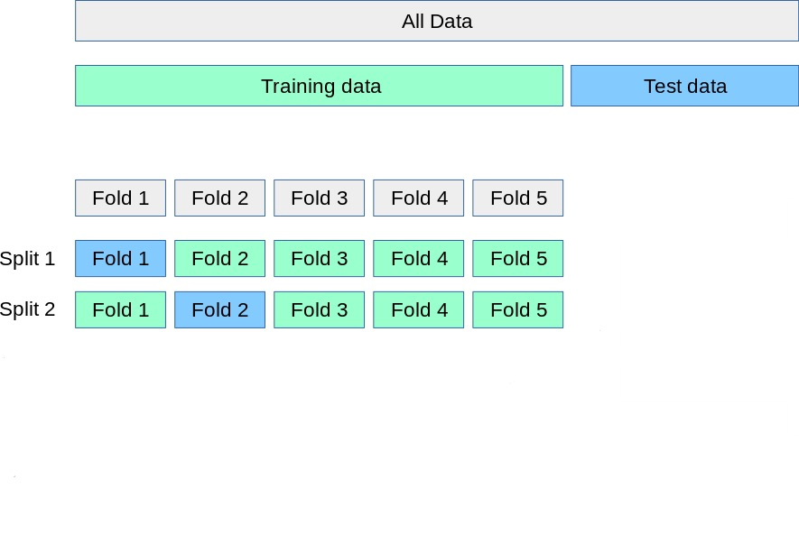
Diagram adapted from scikit-learn’s documentation on cross-validation
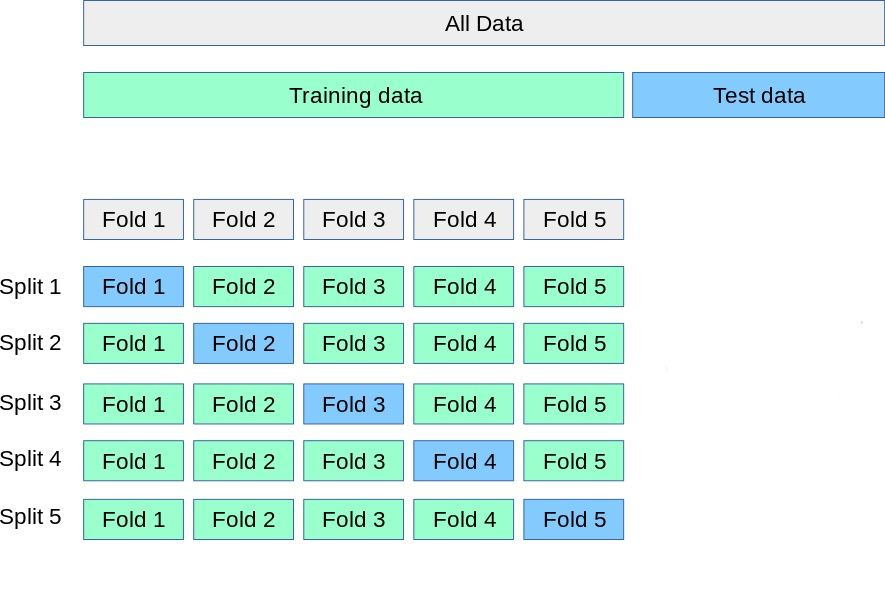
Diagram adapted from scikit-learn’s documentation on cross-validation
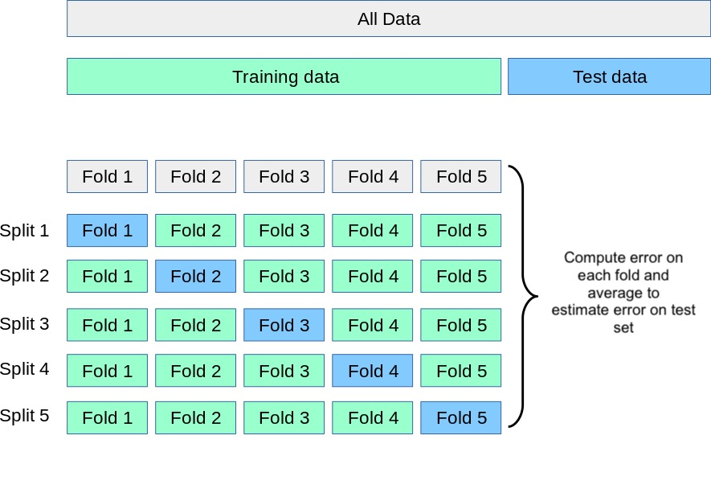
Diagram adapted from scikit-learn’s documentation on cross-validation
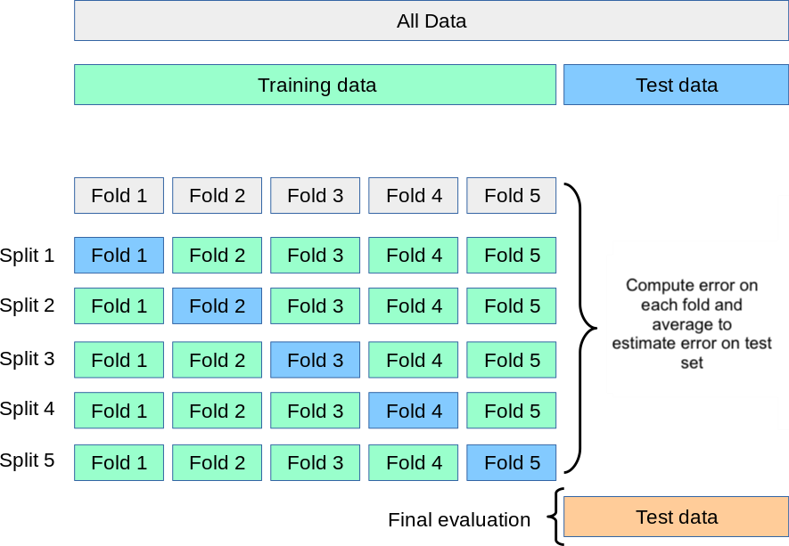
Diagram adapted from scikit-learn’s documentation on cross-validation
A standard resampling method. We use the following steps:
\[\text{CV}_{(k)} = \frac{1}{k} \sum_{i=1}^{k} \text{Err}_i\]
. . .
In practice, use \(k = 5\) or \(k = 10\): each fold trains on 80–90% of the data, fitting only 5 or 10 models.
Our dataset has 210 observations in the training set and 90 in the test set. By using 5-fold CV on our workflow:
. . .
We have:
. . .
How we measure \(\text{Err}_i\) on the \(i\)-th fold depends on the type of problem.
Regression: typically use the Mean Squared Error (MSE):
\[\text{Err}_i = \frac{1}{n_i} \sum_{j \in \text{fold } i} (y_j - \hat{y}_j)^2\]
. . .
Classification: typically use the error rate:
\[\text{Err}_i = \frac{\text{number of misclassified observations in $i$-th fold }}{\text{number of observations in $i$-th fold}}\]
Caveat 1: feature scaling must happen inside the CV loop
Models that rely on distances (e.g., KNN) are sensitive to feature scale. If you standardize the full training set before splitting into folds, the validation fold’s statistics were computed using the whole dataset (data leakage). The scaler must be fit on the training folds only and then applied to the validation fold.
. . .
Caveat 2: use stratified folds for classification
Plain k-fold shuffles without regard to class labels. For classification — especially with class imbalance — this can produce folds where one class is barely represented, making error estimates noisy. Stratified K-fold preserves the class proportion of the full training set in each fold and is the standard practice.
Using CV to select a hyperparameter
A hyperparameter is any setting chosen by the analyst that cannot be learned from the training data during model fitting. For example, the number of neighbors \(K\) in the \(K\)-Nearest neihbors model
. . .
Choosing a hyperparameter by optimizing against the test set is another example of data leakage.
. . .
The test set never influences the selection, so we are not inadvertently tuning our model to perform on the test set.
We decide to tune the hyperparameter \(K\) using CV.
For each value of \(K\) we estimate the test error rate using 10-fold CV.
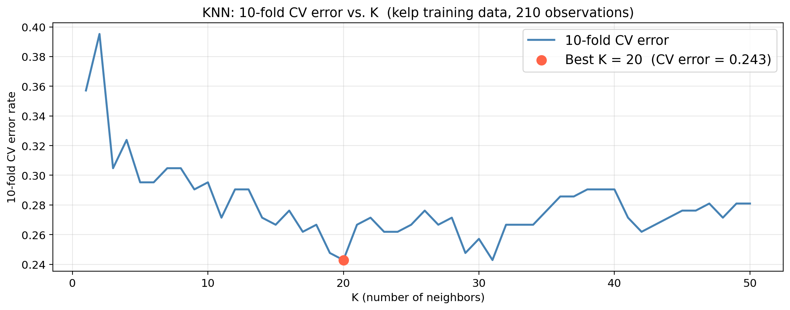

Once \(K\) is selected, on what data would you fit the final model?
Why is using the test set to select \(K\) not the best practice?
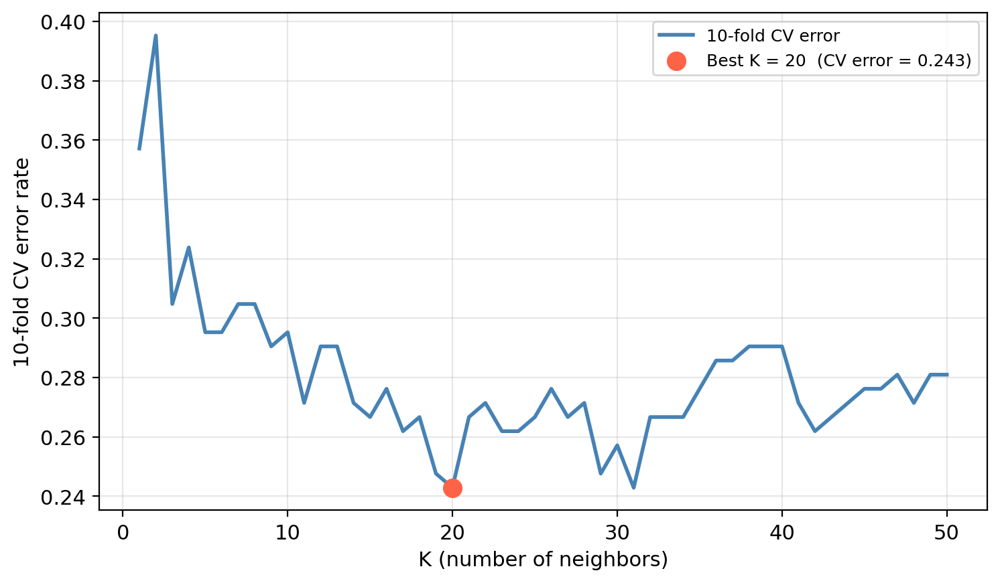
Once \(K\) is selected, on what data would you fit the final model?
Why is using the test set to select \(K\) not the best practice?
On the full training set (all 210 obs). CV only informs the choice of \(K\).
The test set would influence the modeling decision. The reported accuracy would reflect optimization for the specific test set observations, not true generalization.
Once \(K\) is selected via CV, refit on the full training set and evaluate once on the test set.
. . .
In our example data we obtain the following:
Selected K (via CV): 20
CV error estimate: 0.2429
Actual test error: 0.3333If the CV error and test error are in a similar range, cross-validation gave us a reliable estimate of generalization before we ever touched the test set.
CV can be used to compare different model types on the same training data before touching the test set.
Once a model is selected using CV, we can refit on the full training set and report its performance on the test set once, as a final evaluation.
We use the same folds for all models so that differences in CV error reflect the model, not randomness in how the data was split.
. . .
Check-in
10-fold CV error for three candidate models on the kelp training data:
Model CV error
KNN (K=20) 0.243
Logistic (temp only) 0.295
Logistic (temp + nitrate) 0.243Which model would you select and why? What other considerations would you take into account to decide?
Earlier we saw that selecting the classification threshold using the test set leads to data leakage. How is using CV to compare these three models solving the same underlying problem?
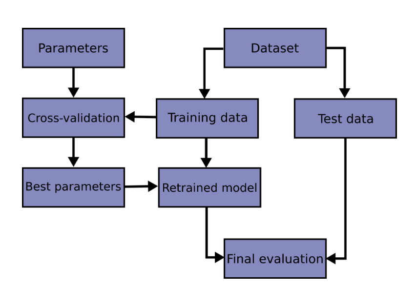
Diagram from scikit-learn’s documentation on cross-validation
CV guides decisions made during model development.